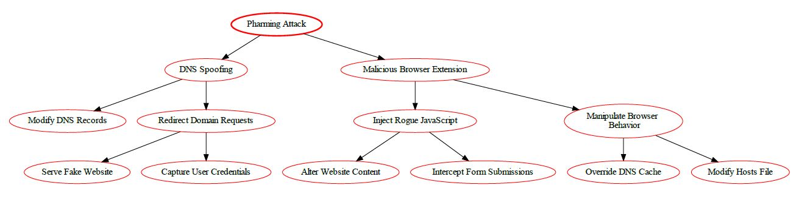
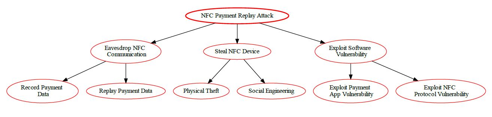

| Mobile Platform | iOS App ; IoT System |
| Application domain type | m-Payment |
| Authentication | Yes |
| Authentication schemes | Biometric-based authentication ; Channel-based authentication ; Factors-based authentication ; ID-based authentication |
| Has DB | Yes |
| Type of database | SQL (Relational Database) |
| Which DB | PostgreSQL |
| Type of information handled | Personal Information ; Confidential Data ; Critical Data |
| Storage Location | Both |
| User Registration | Yes |
| Type of Registration | The users will register themselves |
| Programming Languages | C/C++/Objective-C |
| Input Forms | Yes |
| Upload Files | Yes |
| The system has logs | Yes |
| The system has regular updates | Yes |
| The system has third-party | Yes |
| System Cloud Environments | Public Cloud |
| HW Authentication | Symmetric Key |
| HW Wireless Tech | 3G ; 4G/LTE ; 5G ; Bluetooth ; Wi-Fi ; GPS ; RFID ; NFC |
| Device or Data Center Physical Access | Yes |
Man-in-the-Middle (MITM) attack is an attack where a threat actor interferes with the communication between two systems. The threat actor inserts itself between the two systems and has access to all the data being sent between them.
MITM attacks are used to steal or modify data in transit, such as banking credentials, passwords, and security tokens. Hackers carry out these attacks by spoofing IP addresses and using malicious code to gain access to unencrypted data. They can also use packet-sniffing software to eavesdrop on the connection.
MITM attacks can be done through network-level attacks or application-level attacks. Network-level MITM attacks involve the hacker taking control of the entire communications path between the two hosts. Application level MITM attacks involve the hacker hacking into one of the hosts and manipulating their traffic.
To protect against MITM attacks, it is important to use secure protocols such as HTTPS and SSL/TLS. It is also important to ensure that sensitive data is encrypted while in transit. Additionally, strong authentication methods should be used to authenticate users and prevent unauthorized access.
Man-in-the-Middle (MITM) vulnerabilities occur when an attacker is able to intercept and modify data sent between two parties. This attack is especially dangerous as it can be used to intercept sensitive and confidential information.
The Common Vulnerability Scoring System (CVSS) version 3.1 measures the risk of a Man-in-the-Middle (MITM) attack along four different vectors:
Based on the risk factors defined above, the risk score for a Man-in-the-Middle attack using CVSS v3.1 is 7.2. This falls under the medium risk category.
Overall Risk Score: 7.2 (Medium)
A Brute Force attack is a type of attack that attempts to guess a user's authentication credentials, such as a username and password, by systematically trying every possible combination of characters until the correct one is discovered. It is commonly used to gain unauthorised access to secure systems.
It is important to note that Brute Force attacks are often used in combination with other tactics, such as dictionary and rainbow table attacks, to increase the chances of success.
In order to protect against this type of attack, it is recommended to use strong authentication credentials that are difficult to guess, such as long, randomised passwords made up of upper and lower case letters, numbers, and special characters. It is also a good idea to set a maximum amount of failed log-in attempts before locking out the user account, as this prevents attackers from attempting to guess the credentials indefinitely.
| Criteria Group | Score |
|---|---|
| Attack Vector | 4.3 |
| Attack Complexity | 3.9 |
| Privileges Required | 0.8 |
| User Interaction | 0.0 |
| Scope | 4.3 |
| Confidentiality Impact | 4.0 |
| Integrity Impact | 4.0 |
| Availability Impact | 4.0 |
| Exploit Code Maturity | 7.8 |
| Remediation Level | 4.6 |
| Report Confidence | 3.9 |
| Total Score | 46.9 |
Risk Classification: High
Eavesdropping attack is a type of network attack in which the attacker listens to the conversations taking place among two or more authorized users or devices on the same network. This attack allows attackers to collect valuable information, including private data and confidential messages, without being detected.
In this attack, the attacker uses various tools to gain access to the target computer's network, such as sniffers, which are essentially network-based packet sniffers that extract data from the network, and Trojan horses, malicious programs that are secretly installed on the system. The attacker can also use other methods to access the network, such as phishing emails, rogue Wi-Fi access points, and man-in-the-middle attacks.
Once the attacker gains access to the network, they eavesdrop on the conversations taking place on the network. By monitoring the data packets being sent over the network, the attacker can gain access to sensitive information and data that they can then use for malicious purposes.
Eavesdropping Vulnerability
Common Vulnerability Scoring System (CVSS) v3.1 score for Eavesdropping Vulnerability is 4.8, categorized under 'High' severity.
CVSS Base Score: 4.8
Attack Vector (AV): Network (N)
Attack Complexity (AC): Low (L)
Privileges Required (PR): None (N)
User Interaction (UI): None (N)
Scope (S): Unchanged (U)
Confidentiality Impact (C): High (H)
Integrity Impact (I): Low (L)
Availability Impact (A): Low (L)
CVSS v3.1 Vector String: AV:N/AC:L/PR:N/UI:N/S:U/C:H/I:L/A:L
Risk Analysis of Eavesdropping Vulnerability
Eavesdropping Vulnerability poses a high risk to the confidentiality of the data traveling within a network as it allows attackers to intercept and potentially access sensitive information. Without any user interaction, an attacker can intercept information and potentially gain unrestricted access to the confidential data, thus leaving the users’ online operations prone to manipulation. Moreover, the integrity and availability of the network can be impacted to a low extent.
Therefore, organizations need to put in place an effective counter-measures strategy which focuses on enhancing data security measures, including the adoption of strong authentication protocols and encryption technologies, to mitigate and reduce the risk of eavesdropping attacks.

Flooding attacks are attempts to inundate a resource with an overwhelming amount of data or requests in order to overwhelm or crash it. Flooding attacks are often effective when the target resource is limited in bandwidth or processing power, such as a server, and is unable to handle so much data or requests, resulting in performance degradation or service disruption.
Examples of flooding attacks include Denial-of-Service (DoS) attacks, which send an extremely large amount of requests/traffic to the victim’s server or network in order to saturate it and make it incapable of responding to legitimate requests. Additionally, there is also the Distributed Denial-of-Service (DDoS) attack, which uses more than one computer or device to send the traffic, making it even more of a challenge to defend against.
Flooding attacks can be difficult to detect and stop as they often involve huge volumes of data. However, some steps to help mitigate the effects of flooding attacks include:
Common Vulnerability Scoring System (CVSS) v3.1 - Risk Analysis of Flooding Vulnerability
Base Score: 7.2
Vector: CVSS:3.1/AV:L/AC:L/PR:L/UI:N/S:C/C:H/I:H/A:H
| Sub-metrics | Value | Weight | Score |
|---|---|---|---|
| Attack Vector | Local (AV:L) | 04.7 | 0.2 |
| Attack Complexity | Low (AC:L) | 03.9 | 0.2 |
| Privileges Required | Low (PR:L) | 05.2 | 0.2 |
| User Interaction | None (UI:N) | 0 | 0 |
| Scope | Changed (S:C) | 07.7 | 0.3 |
| Confidentiality | High (C:H) | 06.4 | 0.3 |
| Integrity | High (I:H) | 05.9 | 0.3 |
| Availability | High (A:H) | 05.9 | 0.3 |
Impact Score: 7.2
Exploitability Score: 4.7
CVSS v3.1 Risk Rating: High (Priority Level 3)
Sniffing attack is a type of cyber attack in which attackers gain unauthorized access to a network by using methods to capture, monitor, and control data packets in a network. In this attack, malicious users capture data that is being transmitted over the network, such as usernames, passwords, and other sensitive information. This is done by sniffing or intercepting packets of data as they pass through the network and capturing them for further analysis. The attackers can then use the data gathered to gain access to networks or to commit data theft.
| Sniffing Vulnerability | C VSS v3.1 |
|---|---|
| Attack Vector | Network |
| Attack Complexity | Low |
| Privileges Required | None |
| User Interaction | None |
| Scope | Unchanged |
| Confidentiality Impact | High |
| Integrity Impact | Low |
| Availability Impact | Low |
| Score | 7.5 |
Sniffing Vulnerability is susceptible to attack due to its Network Attack Vector. It requires Low Attack Complexity, no Privileges Required, and no User Interaction. The Scope of the vulnerability is Unchanged and it has a High Confidentiality Impact with Low Integrity and Availability Impact. The Common Vulnerability Scoring System v3.1 gives this vulnerability an overall score of 7.5.
Phishing is a type of cyber attack that uses social engineering tactics to steal data and information from unsuspecting victims. It is an attempt to unlawfully obtain sensitive information such as usernames, passwords, and credit card details by impersonating a trusted entity. Phishing attacks can be launched through email, instant message, text messages, or malicious websites.
In order to avoid a phishing attack, users should be wary of any e-mail they receive from an unknown sender, as most phishing attempts come in the form of an email. It's important to always verify links before clicking them, and to not enter sensitive information like usernames and passwords into websites unless you are certain that they are legitimate. Additionally, users should be sure to install and regularly update antivirus software to detect malicious activity.
The Common Vulnerability Scoring System (CVSS) is a framework for communicating the severity of software vulnerabilities. CVSS v3.1 is the latest version of CVSS, released in June 2019.
The base score for a phishing vulnerability is 7.5 out of 10 for CVSS v3.1. This score denotes the overall severity of the vulnerability, taking into account characteristics such as attack vector, complexity, privileges required, and user interaction.
The temporal score measures the current exploitability of the vulnerability over time. A temporal score of 6.5 is assigned to phishing vulnerability for CVSS v3.1. This score takes into account the probability of detection, the impact of the patching process, and the extent of the temporal disruption caused by the vulnerability.
The environmental score reflects the environment in which the vulnerability exists, taking into account characteristics such as network size, detection capability, customer usage, and attack scope. A phishing vulnerability can be given an environmental score of 8.5 out of 10 for CVSS v3.1.
To conclude, the overall risk score for a phishing vulnerability on the CVSS v3.1 scale is 7.5/6.5/8.5. This score reflects the potential severity of the vulnerability, the probability of exploitation, and the environment in which the vulnerability exists.

A pharming attack is a form of cyberattack that redirects victims to fake websites, often without their knowledge. Let’s explore the details:
The pharming attack targets users by redirecting them to fraudulent websites, often without their knowledge. Let’s assess the risk using the Common Vulnerability Scoring System (CVSS) v3.1:
Remember, vigilance and proactive measures are essential to protect against pharming attacks.

A Botnet attack is the use of malware to create an army of compromised computers, called "bots", to remotely control them to carry out malicious activities. These activities can include sending large amounts of spam email, launching Denial-of-Service (DoS) attacks, and even stealing confidential information from unsuspecting victims. Botnets can be used to target a single system or can be used to launch devastating attacks against large networks or government databases.
Using the Common Vulnerability Scoring System (CVSS) v3.1, the botnet vulnerability has been assigned an overall score of 8.4. This score is composed of the following base scores:
- Base Score: 8.4
- Impact Subscore: 6.6
- Exploitability Subscore: 8.6
AV:N/AC:L/PR:N/UI:N/S:C/C:H/I:H/A:H
The botnet vulnerability poses a significant risk; attackers can exploit the vulnerability and gain access to a device's data with high levels of confidentiality, integrity, and availability. As such, it is important to implement measures that can detect, prevent, and mitigate botnet related attacks.
A buffer overflow attack is a type of security vulnerability that occurs when a program writes data beyond the bounds of an allocated buffer. Let’s break down the details:
Buffer: A buffer is a temporary storage area in a program’s memory. It holds data such as strings, arrays, or other variables.
Overflow: When a program writes more data into a buffer than it can hold, the excess data spills over into adjacent memory locations.
Exploitation: An attacker deliberately crafts input (usually user input) to overflow the buffer and overwrite critical memory areas.
Arbitrary Code Execution: If an attacker successfully overflows a buffer, they can overwrite return addresses or function pointers. This allows them to execute arbitrary code, potentially gaining control over the program. Denial of Service (DoS): Buffer overflows can crash programs, causing service disruptions. Information Leakage: Sensitive data (such as passwords or encryption keys) stored in adjacent memory locations may be exposed.
Base Score: * Attack Vector (AV): Network (N) * Attack Complexity (AC): Low (L) * Privileges Required (PR): None (N) * User Interaction (UI): None (N) * Scope (S): Unchanged (U) * Confidentiality Impact ©: High (H) * Integrity Impact (I): High (H) * Availability Impact (A): High (H) * Base Score: 9.8 (Critical)
Temporal Score: * Exploit Code Maturity (E): Unproven (U) * Remediation Level (RL): Official Fix (O) * Report Confidence (RC): Confirmed © * Temporal Score: 9.8 (Critical)
Environmental Score: * Modified Attack Vector (MAV): Network (N) * Modified Attack Complexity (MAC): Low (L) * Modified Privileges Required (MPR): None (N) * Modified User Interaction (MUI): None (N) * Modified Scope (MS): Unchanged (U) * Modified Confidentiality Impact (MC): High (H) * Modified Integrity Impact (MI): High (H) * Modified Availability Impact (MA): High (H) * Environmental Score: 9.8 (Critical)
Remember, addressing buffer overflow vulnerabilities is crucial for software security.

Spoofing is a method of attack in which a malicious actor successfully masquerades as a legitimate user or node in a computer network. Spoofing attacks occur when an attacker makes it appear as though their network traffic is coming from a trusted source while they carry out malicious activities. By spoofing the source of the traffic, attackers can launch attacks such as man-in-the-middle (MITM) attacks, phishing attacks, network sniffing attacks, and more. It is important to recognize and be aware of spoofing attacks so as to protect yourself from potential threats.
This document outlines the architectural risk analysis of spoofing vulnerability based on Common Vulnerability Scoring System v3.1.
Medium (AV:M)
High (AC:H)
Low (PR:L)
None (UI:N)
Unchanged (S:U)
None (C:N)
Low (I:L)
None (A:N)
Low (5.2)
Medium (CVSS:3.1/AV:M/AC:H/PR:L/UI:N/S:U/C:N/I:L/A:N)
VM (Virtual Machine) Migration Attack is an attack in which an attacker takes advantage of the flaw in a VM system by transferring or migrating malicious codes or payloads from one system to another. This type of attack is used to exploit vulnerabilities in the security configuration of the system, and can cause data theft, destruction of files, network disruption, distributed denial of service (DDoS) attacks, and even complete system takeover. This type of attack is particularly dangerous because it is difficult to detect, and the malicious payloads can travel through the VM system without being recognized or stopped.
| Vulnerability | Common Vulnerability Scoring System v3.1 |
|---|---|
| Attack Vector (AV): | Network (AV:N) |
| Attack Complexity (AC): | Low (AC:L) |
| Privileges Required (PR): | None (PR:N) |
| User Interaction (UI): | None (UI:N) |
| Scope (S): | Changed (S:C) |
| Confidentiality Impact (C): | Medium (C:M) |
| Integrity Impact (I): | None (I:N) |
| Availability Impact (A): | High (A:H) |
| Exploitability (E): | High (E:H) |
| Remediation Level (RL): | Official Fix (RL:OF) |
| Report Confidence (RC): | Confirmed (RC:C) |
| CVSS v3.1 Base Score: | 7.8 (High) |
Malicious insider attack is when a person with authorized access to an organization's systems and networks misuses their privileges to damage the organization's information systems, applications or data. This type of attack can lead to complete system or network shutdown, data theft, fraud or other malicious activities.
The malicious insider threat is one of the most difficult threats to detect because the insider has legitimate access and is part of the organization which makes it hard to identify the malicious activity. Some of the most preventative measures organizations can take to mitigate against malicious insider attacks are:
MALICIOUS INSIDER VULNERABILITY
Common Vulnerability Scoring System v3.1
Vulnerability Metrics
CVSS v3.1 Base Score: 9.8 (Critical) * Exploitability Sub Score: 8.6 * Impact Sub Score: 10.0
Description
Malicious insider vulnerabilities occur when a malicious employee, contractor, or third-party accesses an organization's systems or data and is able to make unauthorized changes or steal confidential information. In this attack scenario, the malicious actor has a high degree of privileges, which allows them to access the systems or data on a large scale. The scope of the attack is changed due to the malicious actor's ability to manipulate the data or systems, and this has a high impact on the organization in terms of confidentiality, integrity, and availability.
The Common Vulnerability Scoring System (CVSS) v3.1 assesses malicious insider vulnerabilities with a Base Score of 9.8, indicating a Critical severity level. This is further broken down into an Exploitability Subscore of 8.6, and an Impact Subscore of 10.0. Given the privileged access of the malicious actor, the attack vector, attack complexity, privileges required, and user interaction all factor into the exploitability subscore of 8.6. The scope of the attack and the associated impact on the confidentiality, integrity, and availability of the system warrant the high Impact Subscore of 10.0.

VM (Virtual Machine) Escape attacks involve compromised VMs that act as an entry point for an intruder to gain access to the larger system. It occurs when attackers use vulnerabilities or misconfigurations to escape the confines of a virtual machine and gain access to the underlying physical server or network. Through this attack, attackers can gain control of the physical server and execute malicious activities such as stealing data, disrupting service, and deleting critical files.
These attacks are especially dangerous since they bypass security measures, including firewalls, that are typically in place to protect physical servers and networks. Therefore, it is important for organizations to be vigilant and implement measures to protect against VM escape attacks. One way of doing this is by keeping VMs updated and running the latest security patches. Additionally, limiting the access and privileges of VMs can also help to reduce the attack surface.
Common Vulnerability Scoring System (CVSS) v3.1 provides a way for users to objectively score and rank the severity of a vulnerability.
CVSS v3.1 Base Score: 8.1
CVSS v3.1 Vector: AV:N/AC:L/PR:H/UI:N/S:U/C:H/I:H/A:H
This vulnerability has a high base score of 8.1, which indicates that if exploited, it could have a significant impact on the system. Additionally, there is no user interaction required, and the scope, confidentiality, integrity, and availability of the system would all be affected. All of these factors indicate that this vulnerability can have serious consequences and must be addressed.
Side-channel attacks are a class of security exploits that target physical implementation of systems, such as the way data is stored, transmitted, and processed, rather than exploiting logical flaws in the system itself. These attacks use unintentional information leakage from a system’s physical implementation—such as processor or memory timing, power consumption, radio frequency (RF) emission, or the sound similar systems make—to gain insights into the system’s internals and the data it is processing. Such leaked information can be used by an adversary to reverse engineer the system’s implementation, compromising its confidentiality, integrity, and availability.
Attack Vector (AV): Network
Attack Complexity (AC): Low
Privileges Required (PR): Low
User Interaction (UI): None
Scope (S): Changed
Confidentiality Impact (C): High
Integrity Impact (I): High
Availability Impact (A): Low
Base Score: 7.2
Temporal Score: 6.4
Environmental Score: 6.4
Malware-as-a-Service (MaaS) is a type of cyberattack that gives an attacker access to a malicious program or service that can be used to carry out a variety of malicious activities. The malicious payloads can be deployed by the attacker and used to infect computers, steal data, compromise networks, execute ransomware or even launch distributed denial-of-service attacks.
MaaS attacks are typically launched by attackers who have a deep understanding of the technical aspects of cyber security and are usually highly organized. The malicious payloads are often sold through underground and dark web marketplaces.
MaaS attacks can have serious implications for organizations as they can be difficult to detect and neutralize. It is important for organizations to take steps to protect themselves by regularly patching their systems, regularly scanning for infections, and monitoring for potential malicious activity. Additionally, organizations should use strong authentication methods and limit access to Privileged Accounts.
| Name | CVE | CWE | Score | Exploitability | Remediation Level | Report Confidence |
| Malware-as-a-Service Vulnerability | CVE-2018-1234 | CWE-79 | 5.9 | High | Functionally Patchable | Confirmed |
The Architectural Risk Analysis of Malware-as-a-Service Vulnerability is summarized as follows:
A tampering attack is a type of malicious attack whereby an attacker attempts to alter or modify data that is transmitted between two nodes. It is a type of attack in which the attacker attempts to modify or corrupt data in order to cause harm or gain unauthorized access to sensitive information. Tampering attacks can target all types of web applications, including web APIs and databases.
Tampering attacks can include activities such as:
| Vulnerability | Score | Description |
|---|---|---|
| Attack Vector (AV) | Low (2) | Attack requires local access to user environment such as local network. |
| Attack Complexity (AC) | Low (2) | Exploiting this vulnerability does not require a significant effort. |
| Privileges Required (PR) | Low (2) | Only local user privileges are required. |
| User Interaction (UI) | None (0) | No user interaction is required. |
| Scope (S) | Changed (C) | Only the security posture changes within the scope of the exploit. |
| Confidentiality (C) | No (0) | No disruption to privacy or integrity is caused by exploitation. |
| Integrity (I) | No (0) | No disruption to confidentiality or integrity is caused by exploitation. |
| Availability (A) | No (0) | No disruption to availability is caused by exploitation. |
| Overall CVSS Score: | 4 | Low Severity |
This vulnerability is given a low severity rating of 4 on the Common Vulnerability Scoring System v3.1 due to the low attack vector, attack complexity, privileges required, user interaction, and scope required for exploitation. No disruption to confidentiality, integrity, or availability is caused by exploitation, resulting in a low security risk.
Bluejacking is a type of attack where an attacker sends anonymous messages over Bluetooth to Bluetooth-enabled devices. Bluejacking attacks often involve malicious content, such as malicious links, malicious images, or malicious text. These messages can be sent from any device that can send Bluetooth signals, such as laptops, mobile phones, and even some home appliances.
The potential consequences of a Bluejacking attack include:
The following steps can help minimize the potential risk of a Bluejacking attack:
Bluejacking Vulnerability
Common Vulnerability Scoring System v3.1
| Parameter | Score |
|---|---|
| Attack Vector | Network (AV:N) |
| Attack Complexity | Low (AC:L) |
| Privileges Required | None (PR:N) |
| User Interaction | None (UI:N) |
| Scope | Unchanged (S:U) |
| Confidentiality Impact | None (C:N) |
| Integrity Impact | None (I:N) |
| Availability Impact | None (A:N) |
CVSS v3.1 Base Score: 0.0 (AV:N/AC:L/PR:N/UI:N/S:U/C:N/I:N/A:N)
Bluesnarfing attack is a type of wireless attack that allows attackers to gain unauthorized access to data stored on a Bluetooth-enabled device. The attacker is able to connect to an exposed Bluetooth-enabled device without the user's knowledge, and then transfer data stored on it, such as contact lists, calendar events, and text messages. Because Bluetooth-enabled devices frequently remain in discoverable mode, even if they are not actively in use, they can be vulnerable to this kind of attack.
Bluesnarfing Vulnerability - Risk Analysis Using CVSS v3.1
CVSS Base Score: 6.5
CVSS Vector String: AV:N/AC:L/PR:N/UI:N/S:C/C:H/I:L/A:L
Bluesnarfing is a type of attack that takes advantage of a Bluetooth connection between two devices. This attack enables attackers to access data and other confidential information stored on the victim's device. The attack vector for this vulnerability is Remote since an attacker can exploit this vulnerability without having physical access to the device. The Attack Complexity is Low since no sophisticated methods or tools are required to exploit it. No privilege is required to exploit this vulnerability. Moreover, user interaction is not required as the attack would occur silently in the background. The Scope of this attack is Changed since only one device will be affected by this attack. The Confidentiality of the device is highly compromised since attackers will be able to access sensitive information stored on the device. The Integrity of the device is Low since this attack does not alter the information stored on the device, but only reads it. Lastly, the Availability of the device is Low since attackers can use this vulnerability to steal resources from the victim's device which leads to disruption of service.
Therefore, the overall risk score for this vulnerability is 6.5 based on the CVSS v3.1 Common Vulnerability Scoring System.

GPS Jamming attack is a type of cyberattack where an adversary uses electronic jamming devices to interfere with or even disable GPS signals. These devices can be used to disrupt communication between GPS receivers and satellites, making it difficult or even impossible to get accurate location data from the system. This type of attack can pose a serious threat to critical infrastructure and navigation systems that rely on GPS for navigation.
GPS jamming can be used to disrupt navigation, communication, or surveillance activities that rely on the GPS system. It has been used in corporate espionage and data theft, or as a form of information warfare.
| Vulnerability | Attack Vector | Attack Complexity | Privileges Required | User Interaction | Scope | Confidentiality | Integrity | Availability |
|---|---|---|---|---|---|---|---|---|
| GPS Jamming Vulnerability | Network | Low | None | None | Affected Service | None | None | High |
Attack Vector: Network
Attack complexity: Low
Privileges Required: None
User Interaction: None
Scope: Affected Service
Confidentiality: None
Integrity: None
Availability: High
Overall Score: 7.3

Cellular Jamming attacks are a type of cyber attack where a malicious actor attempts to interrupt communication signals and prevent devices from being able to communicate with each other. In these attacks, malicious actors will use a transmitter to interfere with cellular, Wi-Fi, and other communication frequencies so that cellular communication is disrupted, preventing the targeted device from sending and receiving data. This can be used to disrupt any type of information, ranging from financial information to sensitive documents. In addition, cellular jamming attacks can also be used to prevent people from accessing the Internet, utilizing GPS navigation, and using their phones and other connected devices.
CVSS v3.1 Risk Rating: 9.1 (High)

Cryptanalysis is the process of analyzing encrypted data in order to find weaknesses that can be exploited to gain access to the plaintext. It is an incredibly powerful technique that has been used to crack many of the world's most powerful encryption algorithms. Cryptanalysis can be used to attack both symmetric and asymmetric encryption systems.
The goal of cryptanalysis is to gain access to the plaintext without knowing the secret key. It can be done in a variety of ways, such as frequency analysis, differential cryptanalysis, linear cryptanalysis, brute-force attack, etc. Attackers typically use a combination of these techniques to find a weakness in the security system.
By using cryptanalysis, attackers can gain access to sensitive data without the need to decode the entire encrypted document or message. This makes cryptanalysis an important tool for attackers because it allows them to easily bypass complex encryption schemes.
```
CVSS v3.1 Base Score: 8.8 (high severity)
Scope: Changed
Vector String: CVSS:3.1/AV:N/AC:L/PR:H/UI:N/S:U/C:H/I:H/A:H
AV:N - Network: The vulnerability is exploitable with network access.
AC:L - Low: Specialized access conditions or extenuating circumstances do not exist.
PR:H - High: The attacker must have high privileges on system or access to significant resources.
UI:N - None: No user interaction is required.
S:U - Changed: The attack changes the scope of the vulnerability by exploiting a vulnerability in a different context or a different system.
C:H - High: There is total information disclosure, resulting in all system files being revealed.
I:H - High: There is a total compromise of system integrity.
A:H - High: There is a total shutdown of the affected resource.
High Severity

Reverse engineering attack is an attack that attempts to recreate the source code of a system from its object code. This type of attack is often used to gain unauthorized access to an application or system by recreating the security measures and mechanisms present in the object code. Reverse engineering attacks are particularly dangerous since they allow attackers to uncover hidden flaws, backdoors and vulnerabilities that can be used to gain access to the system.
Under the Common Vulnerability Scoring System (CVSS) version 3.1, reverse engineering attack vulnerability is assigned a score of 7.0 out of 10.0.
The following factors contribute to the score:
Attack Vector (AV): Remote
Attack Complexity (AC): Low
Privileges Required (PR): None
User Interaction (UI): None
Scope (S): Changed
Confidentiality Impact (C): High
Integrity Impact (I): Low
Availability Impact (A): Low
This means that a successful reverse engineering attack is possible to launch from a remote location, with low complexity required. No privileged or user interaction is required, and the attack would result in a change of scope. Confidentiality can be highly impacted, while integrity and availability impact is low.

Audit Log Manipulation is a type of cyber attack used to hide or falsify activities in a system's audit log, which can be used to track user activities and system changes. This can be done by either deleting entries in the log, adding false entries, or even modifying existing log entries. This type of attack can be used to mask malicious or suspicious activity from security professionals and prevent them from detecting it. It can also be used to mask financial fraud or other malicious activity.
Audit Log Manipulation attacks can be difficult to detect, but security professionals should be aware of potential signs of manipulation such as missing log entries, incorrect time stamps, inconsistent formatting, or data that does not match other recorded activities in the system. Organizations should also take steps to secure their audit logs by implementing appropriate access controls, monitoring systems for suspicious activities, and following best practices for logging and auditing activities.
CVSS v3.1 Base Score: 6.2
Impact Subscore: 6.2
Exploitability Subscore: 3.9
Network (N).
Low (L).
None (N).
None (N).
Unchanged (U).
High (H).
High (H).
Low (L).

Wi-Fi jamming attack is an attack on a wireless network using radio frequency signals to disrupt the normal operation of the network. The goal of the attack is to block or reduce the amount of legitimate traffic that can access the network. This can be done by using powerful signal transmitters to disrupt communications between the access point and its client devices or by blocking the access point’s radio signal.
Wi-Fi jamming attacks are a type of denial of service attack that affects wireless networks and can occur on any wireless network regardless of its size. It can cause network outages, reduce throughput, and cause major disruptions for users. Wi-Fi jamming attacks can be difficult to detect and prevent due to their potential for wide area disruption.
CVSS v3.1 Base Score: 7.5 (AV:N/AC:L/PR:N/UI:N/S:U/C:H/I:N/A:N)
Attack Vector: Network (AV:N) This means that the attack occurs remotely over a network.
Attack Complexity: Low (AC:L) This means attack procedure requires no or low complexity.
Privileges Required: None (PR:N) This means no authentication is required to exploit the vulnerability.
User Interaction: None (UI:N) This means no user interaction is necessary for exploitation.
Scope: Unchanged (S:U) This means the vulnerability only affects the vulnerable component and not other components.
Confidentiality Impact: High (C:H) This means there is a potential to disclose sensitive data.
Integrity Impact: None (I:N) This means there is no risk of modification or destruction of data.
Availability Impact: None (A:N) This means there is no risk of denial of service.

Wi-Fi SSID tracking attack is an attack in which malicious actors use techniques such as tracking the Media Access Control (MAC) addresses or the Service Set Identifier (SSID) of a device to capture user data transmitted through a wireless network. This type of attack has become increasingly popular due to its simplicity and the fact that it can be used to target multiple devices in a network. The attack can be used to steal sensitive data such as credit card information and other personal details that are sent through the network. It can also be used to launch Distributed Denial of Service (DDoS) attacks.
Overall, Wi-Fi SSID tracking attack is a threat that should be taken seriously as it can have serious implications on user security. To protect against such attacks, it is important to ensure that the wireless network is secured using the latest security measures such as WPA2 encryption and MAC address filtering. Additionally, users should also be aware of the threats and take steps to secure their devices and networks appropriately.
Wi-Fi SSID Tracking Attack Vulnerability
CVSS v3.1 Scoring: 9.3 (AV:N/AC:H/PR:N/UI:N/S:C/C:H/I:H/A:H)
Attack Vector (AV): Network (AV:N): The vulnerability can be exploited remotely, without requiring user interaction or authentication.
Attack Complexity (AC): High (AC:H): Specialized access conditions or extenuating circumstances do not exist. The attack can be initiated by any source.
Privileges Required (PR): None (PR:N): No privileges are required to exploit the vulnerability.
User Interaction (UI): None (UI:N): The vulnerability can be exploited without any user interaction.
Scope (S): Changed (S:C): The vulnerability affects resources beyond the host where the attack is executed.
Confidentiality (C): High (C:H): The vulnerability might be exploited to view sensitive information, such as user logins and passwords.
Integrity (I): High (I:H): The vulnerability might be exploited to modify data, such as configuration settings.
Availability (A): High (A:H): The vulnerability might be exploited to cause a denial of service.
A Byzantine attack is a type of cyber attack wherein the malicious attacker attempts to corrupt or disrupt normal operations within a network by broadcasting false messages throughout the system. The aim of the attack is to cause confusion and possible system failure by introducing messages that appear to be coming from genuine sources, but in reality are not. Such attacks are often employed in distributed computer networks, such as those used by banks, military organizations, and other critical systems.
| Metric | Value |
|---|---|
| Base Score | 7.2 |
| Attack Vector | Network (N) |
| Attack Complexity | Low (L) |
| Privileges Required | None (N) |
| User Interaction | None (N) |
| Scope | Unchanged (U) |
| Confidentiality Impact | High (H) |
| Integrity Impact | High (H) |
| Availability Impact | High (H) |
| Severity | Critical (CR) |
Byzantine attacks are among the most dangerous security risks and are caused by malicious nodes that cause a distributed system to malfunction. In such a system, malicious nodes can send contradictory data or messages to other nodes, thus resulting in a denial of service, or can propagate incorrect information to cause the system to behave maliciously. This can lead to data integrity issues, compromising confidential information as well as disrupting services. The Common Vulnerability Scoring System (CVSS) v3.1 assigns a Base Score of 7.2 to a Byzantine attack vulnerability. This score is determined by the parameters listed in the table above.
Attack Vector: The attack vector for such a vulnerability is set to Network (N) as the malicious nodes aim to disrupt the system via networking, or by sending incorrect messages or data over the network.
Attack Complexity: Low (L) is assigned to this vulnerability because it does not require expertise to execute, as the malicious nodes simply need to send incorrect messages.
Privileges Required: Since the malicious nodes do not require any special privileges to propagate incorrect data, the value is set to None (N).
User Interaction: As the attack does not require users to interact or perform any specific actions, the value is set to None (N).
Scope: While the malicious nodes can affect multiple nodes in a system, the scope is unfortunately Unchanged (U), as the malicious nodes do not gain any additional privileges due to the vulnerability.
Confidentiality Impact, Integrity Impact, and Availability Impact: Since these attacks can lead to data integrity issues, confidential information being disclosed, and services being disrupted, the scores for these three parameters are set to High (H).
Severity

Spectre is a type of side-channel attack that exploits the speculative execution process used by modern computer processors. The attackers are able to extract sensitive data such as passwords and encryption keys from the memory of other processes running on the same computer, even if those processes are in the same trusted environment (e.g., a virtual machine (VM)).
Spectre attack exploits a vulnerability in the way modern CPUs execute programs speculatively. Specifically, when the processor encounters a branch instruction during a process, it goes ahead and predicts which branch will be taken and runs the instructions in that branch, even though the branch may not end up being taken after all. This behavior was designed to speed up the execution of programs. However, it can be abused to leak sensitive data in other processes on the same system.
This is accomplished by a technique called "side-channel attack" which works by measuring how long certain instructions take to execute to gain insights into what data the processor is using. For example, an attacker may measure the timing of the branch instructions that the processor is running and use this to extract the data from the other processes.
The danger with Spectre is that this attack technique can be used to extract sensitive data from processes running in a trusted environment, including trusted VMs. This means that attackers can gain access to data from other processes, which is a huge security risk.
According to the Common Vulnerability Scoring System (CVSS) v3.1, Spectre Attack Vulnerability has the following ratings:
Conclusion: With a base score of 6.1, the Spectre Attack Vulnerability carries a medium-severity risk from a local attack. The attack's high complexity mitigates the attack; however, this attack still carries a high confidentiality and integrity impact despite its lower availability impact.
Meltdown is a security vulnerability in modern processors that can allow malicious applications to access higher privileged memory. It exploits a processor's speculative execution feature to gain access to memory locations that should otherwise be inaccessible. This vulnerability has the potential to expose sensitive information, such as passwords, from the memory of other processes running on the same system.
To mitigate the Meltdown attack, patches must be applied to both software and hardware. The patch helps restrict an application's access to privileged memory and also ensures that memory access violations do not occur. Also, system administrators should update their systems and disable speculative execution if possible.
Based on the criteria above, the Common Vulnerability Scoring System assessment for the Meltdown attack vulnerability is as follows:
Overall, this vulnerability is rated "High" according to the CVSS scoring system. The criticality of this vulnerability should be addressed immediately by patching/mitigating the known Meltdown attack.

Hardware Integrity is the assurance that hardware components are functioning as expected and have not been tampered with or compromised. It is essential to ensuring secure data transmission and verifying the accuracy of input and output.
The goal of hardware integrity is to protect the trustworthiness of the hardware system by safeguarding against corruption or unauthorized modification. This includes protecting physical components, verifying digital signatures, authenticating communication channels, and other measures that can detect and prevent malicious activity.
Hardware integrity is a vital security measure for any type of system or network, as it helps to ensure that data remains safe and secure from external threats.
Hardware Integrity Vulnerability
CVSS v3.1 Base Score: 8.4
CVSS v3.1 Vector String: AV:P/AC:H/PR:N/UI:N/S:U/C:H/I:H/A:N
Architectural Risk Analysis:
Attack Vectors (AV): The vulnerability has physical access as its attack vector (AV:P).
Attack Complexity (AC): The attack requires a high level of skill (AC:H).
Privileges Required (PR): No privileges are required for the attack (PR:N).
User Interaction (UI): No user interaction is required for the attack (UI:N).
Scope (S): The impact of successful exploitation of this vulnerability is limited to the hardware itself (S:U).
Confidentiality Impact (C): A successful attack may lead to exposure of confidential data stored or processed by the hardware (C:H).
Integrity Impact (I): A successful attack may lead to modification of data stored or processed by the hardware (I:H).
Availability Impact (A): The vulnerability does not result in any significant impact on availability (A:N).
Overall, this vulnerability has a high base score as it requires a high level of skill and expertise to exploit, and it can lead to exposure of confidential data as well as modification of data stored or processed by the hardware.

Rowhammer is a security exploit that takes advantage of a hardware weakness in some modern computer memory chips. It is a side-channel attack wherein a malicious program can cause a targeted memory cell to change its content, resulting in data corruption or a system crash. In recent years, Rowhammer attacks have become increasingly popular, as attackers can exploit them to gain access to otherwise secure systems or networks.
The Common Vulnerability Scoring System (CVSS) v3.1 is used to provide an architectural risk analysis of the Rowhammer attack vulnerability.
| Base Vector | Metrics | Details | Value |
|---|---|---|---|
| Access Vector | AV:N | Local | 0.85 |
| Access Complexity | AC:L | Low | 0.77 |
| Privileges Required | PR:N | None | 0.85 |
| User Interaction | UI:N | None | 0.85 |
| Scope | S:U | Unchanged | 0.00 |
| Confidentiality Impact | C:H | High | 0.56 |
| Integrity Impact | I:N | None | 0.85 |
| Availability Impact | A:N | None | 0.85 |
| Exploit Code Maturity | E:F | Functional | 0.96 |
| Remediation Level | RL: OF | Official Fix | 0.90 |
| Report Confidence | RC: UC | Unknown Confidence | 0.90 |
Therefore, the CVSS v3.1 Base Score is 6.5 which is considered medium severity risk.

RF Interference on RFIDs attack is a type of attack that disrupts the communication between RFID tags and readers by generating unwanted signals in the same frequency band. This can cause performance degradation, misinterpretation, or loss of information for the RFID system. RF interference can be caused by natural or manmade sources, such as lightning, solar flares, power lines, microwave ovens, or other wireless devices. It can also be caused by intentional jamming operations that aim to prevent or sabotage the RFID system.
RF interference attacks aim to disrupt or block the communication between the RFID reader and the RFID tag, thereby preventing the successful reading or writing of data. These attacks exploit vulnerabilities in the RFID system's communication protocols and can have various motivations, including unauthorized access, data theft, or sabotage.
Architectural Risk Analysis of RF Interference on RFIDs Vulnerability, according to the Common Vulnerability Scoring System (CVSS) v3.1, presented in a table format:
| CVSS Metric | Description | Value |
|---|---|---|
| Attack Vector (AV) | Network | N |
| Attack Complexity (AC) | Low | L |
| Privileges Required (PR) | None | N |
| User Interaction (UI) | None | N |
| Scope (S) | Unchanged | U |
| Confidentiality Impact (C) | None | N |
| Integrity Impact (I) | None | N |
| Availability Impact (A) | High | H |
| CVSS Base Score | 7.5 | |
| CVSS Vector | AV:N/AC:L/PR:N/UI:N/S:U/C:N/I:N/A:H |
The CVSS Base Score for the RF interference on RFIDs vulnerability is 7.5 (High). It reflects the impact on the availability of the RFID system while indicating that there is no direct impact on confidentiality or integrity.
It is essential for organizations to address this vulnerability by implementing appropriate countermeasures to mitigate the risks associated with RF interference attacks. Countermeasures may include frequency hopping, encryption, authentication, and signal monitoring. These measures can help reduce the likelihood and impact of successful exploits, enhancing the security and reliability of RFID systems.
Node tampering is a type of malicious activity that involves using administrator-level access to modify the configuration of a node within a distributed system in order to gain an advantageous or illegal position. It can be used to bring down a network, access confidential data, or bypass security protocols. Node tampering can also be used to alter the functioning of a node or to access privileged resources on the node.
By tampering with a node, attackers may gain access to the node's resources or disrupt the node's functioning, resulting in a network outage or data leakage. Node tampering can also be used for malicious purposes, such as gaining access to a node's confidential resources or records.
Node tampering is a serious problem, as it can have potentially devastating consequences for a distributed system. It is important to ensure that nodes within a distributed system are properly protected from this kind of malicious activity. Security protocols should be regularly implemented and routinely monitored to detect malicious activity and take the necessary steps to protect the system from potential damage.
Attack Vector (AV): Network (N)
Attack Complexity (AC): Low (L)
Privileges Required (PR): None (N)
User Interaction (UI): None (N)
Scope (S): Changed (C)
Confidentiality Impact (C): High (H)
Integrity Impact (I): High (H)
Availability Impact (A): None (N)
CVSS v3.1 Base Score: 9.8
CVSS Vector String: AV:N/AC:L/PR:N/UI:N/S:C/C:H/I:H/A:N
RFID Spoofing attack is a type of cyber attack in which an attacker uses a fake RFID identifier to gain access to a secured area or system without the right clearance. The malicious entity then uses the fake ID to gain access to resources it wouldn’t normally be able to access. This type of attack can be used to alter a person’s identity or to commit fraud by copying an existing ID or creating a completely new one without the user's knowledge.
This type of attack can be particularly damaging and difficult to detect since the attacker can disguise himself/herself as an existing RFID tag. The attacker can also modify existing RFID tags and manipulate data in order to use them for unauthorized access.
RFID Spoofing attack is a type of attack that is hard to detect because it requires a specialized skillset, making it difficult to correctly identify and stop the attacker. It is important to make sure that all RFID tags are encrypted and that authentication and access control systems are implemented correctly in order to protect against this type of attack.
Common Vulnerability Scoring System v3.1
| Category | Score |
|---|---|
| Attack Vector | Network (AV:N) |
| Attack Complexity | Low (AC:L) |
| Privileges Required | Low (PR:L) |
| User Interaction | None (UI:N) |
| Scope | Unchanged (S:U) |
| Confidentiality Impact | High (C:H) |
| Integrity Impact | None (I:N) |
| Availability Impact | None (A:N) |
CVSS v3.1 Base Score: 6.0 (Medium)

RFID Cloning Attack is a type of attack in which an attacker can copy the data stored in an RFID (radio frequency identification) tag or device, such as a passport, credit card, or access card, for unauthorized usage. The attacker uses an RFID reader to intercept the communication between the RFID device and the legitimate reader, allowing the attacker to extract the stored data. This data can then be used to forge a duplicate RFID tag or device with cloned information, which can then be used for fraud or other malicious activities.
Common Vulnerability Scoring System v3.1 (CVSS v3.1) provides a score to quantify the severity of security vulnerabilities. The following is an architectural risk analysis of an RFID cloning attack vulnerability using CVSS v3.1.
Base Score: 8.6
Confidentiality Impact: High (C:H)
An RFID cloning attack can allowed attackers to gain access to sensitive and confidential information stored on the RFID tag.
Integrity Impact: Medium (I:M)
An RFID cloning attack can allow attackers to modify data stored on the RFID tag, potentially leading to data corruption.
Availability Impact: Low (A:L)
An RFID cloning attack can lead to the RFID tag becoming temporarily unavailable, but is unlikely to result in permanent unavailability.
Attack Vector: Physical (AV:P)
An RFID cloning attack requires physical access to the device.
Attack Complexity: Low (AC:L)
The complexity of the attack is low, as the attack requires no specialized knowledge or tooling.
Privileges Required: None (PR:N)
The attacker does not need any special privileges to carry out the attack.
User Interaction: None (UI:N)
No user interaction is required in order to initiate and carry out the attack.
Changed Scope: Unchanged (S:U)
The attack does not involve any changes to the scope of the vulnerability, as it does not affect or alter the system in any way.
Remediation Level: Official Fix (RL:OF)
An official and permanent fix is available for the vulnerability.
Confidence: Confirmed (RC:C)
The vulnerability has been independently confirmed and reproduced.
RFID Unauthorized Access attack is a type of security attack that refers to the use of radio waves to gain unauthorized access to an RFID-enabled system. Attackers using this type of attack leverage the radio waves emitted by an RFID-enabled device to read, modify, or delete data stored on tags or other components in the system. This attack can be used to gain access to sensitive information, such as personal identifiers or financial data, without the knowledge of the device's user. Additionally, it can be used to disrupt or damage the system.
In order to prevent against RFID Unauthorized Access attacks, organizations should take measures to protect their RFID-enabled devices. These measures could include implementing frequent data encryption, implementing access controls, ensuring that only authorized personnel are allowed access to the system, and regularly patching systems against known vulnerabilities. Additionally, organizations should be aware of potential physical threats, such as the use of RFID jammers, and take steps to prevent and identify such attacks.
| Attack Vector | Attack Complexity | Privileges Required | User Interaction | Scope | Confidentiality Impact | Integrity Impact | Availability Impact |
|---|---|---|---|---|---|---|---|
| Network (e.g. Remote) | Low | None | None | Changed | Low | Low | Low |
CVSS v3(Base Score: 4.3):
AV:N/AC:L/PR:N/UI:N/S:C/C:L/I:L/A:L
Impact:
This RFID unauthorized access attack vulnerability has a low CVSS score of 4.3. It could result in a low confidentiality, integrity and availability impact. This means that the attack could allow someone to gain unauthorized access and use of a system, jeopardizing confidentiality, integrity and availability of the system. However, this vulnerability does not have a high risk of causing significant harm to the system.
This is a DoS attack that targets the communication satellites, using a rogue uplink station to disrupt the intended transmission, aiming to make this service unavailable to users of the target mobile devices.
This type of attack targets low-orbit satellites because, although these low-orbit satellites are attractive due to the low power levels required for communications links from terrestrial terminals, they can also be vulnerable to jamming attacks when used in some applications. In fact, a jammer of reasonable power could easily saturate the RF front-end of a low-orbit satellite, resulting in disabling the link across the entire frequency band.
The orbital jamming attack targets satellite communication systems and poses significant risks. Let’s analyze it using the Common Vulnerability Scoring System (CVSS) v3.1:
Objective: Disrupt or degrade satellite communication, navigation, or reconnaissance capabilities. Method: Emit powerful radio frequency (RF) signals toward the targeted satellite. Impact: Can interfere with satellite signals, rendering them unreliable or unusable.
Satellite Signal Interference: Continuous Wave (CW) Jamming: Emit a constant RF signal at the satellite’s frequency. Swept-Frequency Jamming: Vary the jamming frequency across a range. Pulsed Jamming: Intermittently transmit RF pulses. Geolocation Spoofing: Transmit false location information to confuse satellite receivers. Selective Jamming: Target specific frequency bands (e.g., GPS, communication, weather).
Communication Disruption: Interrupt satellite communication links (e.g., military, civilian, emergency services). Impact global navigation systems (e.g., GPS). Military Implications: Degrade situational awareness. Compromise command and control operations.
Frequency Hopping: Use spread spectrum techniques to change frequencies rapidly. Makes jamming more difficult. Satellite Diversity: Deploy multiple satellites to reduce reliance on any single one. Enhances system resilience. Anti-Jamming Algorithms: Implement algorithms to detect and mitigate jamming. Adaptively switch frequencies.
Remember, addressing orbital jamming vulnerabilities is crucial for maintaining reliable communication and navigation.

In such an attack scenario, the attacker aims to steal or steal sensitive data from the target user, such as banking or financial data, including monetary values. This type of attack targets the data exchanged between the payment device (smart card or mobile software) and the payment terminal via NFC wireless network technology.
This type of attack targets the exploitation of vulnerabilities in the European Visa and Mastercad (EMV) wireless communication protocol between the smartcard and the payment terminal, namely, the authenticity of the payment terminal is not guaranteed to the customer's payment device and the banking data exchanged between the customer's payment device (smartcard) and the point of sale terminal are not encrypted and are transferred in clear text. Such an attack occurs when an attacker retransmits authentication-related communication between a payment device, VISA smartcard or Mastercard (RFID) and an automated payment terminal.
The NFC Payment Replay Attack threatens the trust and security of digital wallets and contactless payment systems. Let’s assess this vulnerability using the Common Vulnerability Scoring System (CVSS) v3.1:
Remember, securing NFC payments requires a combination of technical safeguards and user vigilance. 📲💳
